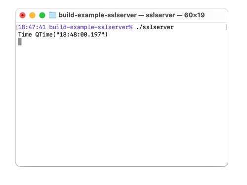

SSL Server and Client
Setting up a secure Remote Object network using QSslSockets.
Encrypting communication is critical when you need to pass data through a network you don't have full control over. The two applications in this example show how to share remote objects over an SSL connection, and how to access them.

Both sslserver and sslcppclient use a custom root CA certificate to validate each other's certificates all located in sslserver/cert.
SSL Server
The sslserver is configured with certificates and a private key.
auto config = QSslConfiguration::defaultConfiguration(); config.setCaCertificates(QSslCertificate::fromPath(QStringLiteral(":/sslcert/rootCA.pem"))); QFile certificateFile(QStringLiteral(":/sslcert/server.crt")); if (certificateFile.open(QIODevice::ReadOnly | QIODevice::Text)) config.setLocalCertificate(QSslCertificate(certificateFile.readAll(), QSsl::Pem)); else qFatal("Could not open certificate file"); QFile keyFile(QStringLiteral(":/sslcert/server.key")); if (keyFile.open(QIODevice::ReadOnly | QIODevice::Text)) { QSslKey key(keyFile.readAll(), QSsl::Rsa, QSsl::Pem, QSsl::PrivateKey); if (key.isNull()) qFatal("Key is not valid"); config.setPrivateKey(key); } else { qFatal("Could not open key file"); } config.setPeerVerifyMode(QSslSocket::VerifyPeer); QSslConfiguration::setDefaultConfiguration(config);
Then it creates a QRemoteObjectHost object and a QSslServer object. The QSslServer object listens on port 65511. Then setHostUrl is called on the QRemoteObjectHost object with the URL of the QSslServer object.
QRemoteObjectHost host; QSslServer server; server.listen(QHostAddress::Any, 65511); host.setHostUrl(server.serverAddress().toString(), QRemoteObjectHost::AllowExternalRegistration);
A lambda is used to handle the errorOccurred signal by outputting the error to the terminal. A second lambda is connected to the pendingConnectionAvailable signal, which connects an error handler, and calls addHostSideConnection on the QRemoteObjectHost object with the incoming socket as argument to make the host object use the socket for communication.
QObject::connect(&server, &QSslServer::errorOccurred, [](QSslSocket *socket, QAbstractSocket::SocketError error) { Q_UNUSED(socket); qDebug() << "QSslServer::errorOccurred" << error; }); QObject::connect(&server, &QSslServer::pendingConnectionAvailable, [&server, &host]() { qDebug() << "New connection available"; QSslSocket *socket = qobject_cast<QSslSocket *>(server.nextPendingConnection()); Q_ASSERT(socket); QObject::connect(socket, &QSslSocket::errorOccurred, [](QAbstractSocket::SocketError error) { qDebug() << "QSslSocket::error" << error; }); host.addHostSideConnection(socket); });
Finally, a MinuteTimer object is created and enableRemoting is called on the QRemoteObjectHost object with the MinuteTimer object as argument to enable it to be shared.
MinuteTimer timer; host.enableRemoting(&timer);
SSL Client
The sslcppclient sets the root CA certificate and then creates a Tester object.
int main(int argc, char *argv[]) { QCoreApplication a(argc, argv); auto config = QSslConfiguration::defaultConfiguration(); config.setCaCertificates(QSslCertificate::fromPath(QStringLiteral(":/sslcert/rootCA.pem"))); QSslConfiguration::setDefaultConfiguration(config); Tester t; return a.exec(); }
In the Tester constructor a temporary QRemoteObjectNode object is created, and setupConnection is used to create and configure a QSslSocket object. An error handler is connected, and the QSslSocket is used by the QRemoteObjectNode object by calling addClientSideConnection on it.
QRemoteObjectNode m_client; auto socket = setupConnection(); connect(socket, &QSslSocket::errorOccurred, socket, [](QAbstractSocket::SocketError error){ qDebug() << "QSslSocket::error" << error; }) ; m_client.addClientSideConnection(socket);
Then three QScopedPointer that are members of the Tester class are connected to three replicas of MinuteTimer by using acquire on the QRemoteObjectNode object. Finally QTimer::singleShot is used four times to call reset after a delay.
ptr1.reset(m_client.acquire< MinuteTimerReplica >()); ptr2.reset(m_client.acquire< MinuteTimerReplica >()); ptr3.reset(m_client.acquire< MinuteTimerReplica >()); QTimer::singleShot(0, this, &Tester::clear); QTimer::singleShot(1, this, &Tester::clear); QTimer::singleShot(10000, this, &Tester::clear); QTimer::singleShot(11000, this, &Tester::clear);
When Tester::clear is called for the first three times, one pointer is checked that it is bound and then reset, for a different pointer each time. When it is called for the fourth time it causes the application to quit.
void clear() { static int i = 0; if (i == 0) { i++; if (ptr1.isNull()) qCritical() << "Pointer 1 was not set"; ptr1.reset(); } else if (i == 1) { i++; if (ptr2.isNull()) qCritical() << "Pointer 2 was not set"; ptr2.reset(); } else if (i == 2) { i++; if (ptr3.isNull()) qCritical() << "Pointer 3 was not set"; ptr3.reset(); } else { qApp->quit(); } }